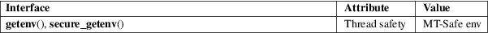

getenv, secure_getenv − get an environment variable
Standard C library (libc, −lc)
#include <stdlib.h>
char
*getenv(const char *name);
char *secure_getenv(const char *name);
Feature Test Macro Requirements for glibc (see feature_test_macros(7)):
secure_getenv():
_GNU_SOURCE
The getenv() function searches the environment list to find the environment variable name, and returns a pointer to the corresponding value string.
The GNU-specific secure_getenv() function is just like getenv() except that it returns NULL in cases where "secure execution" is required. Secure execution is required if one of the following conditions was true when the program run by the calling process was loaded:
|
• |
the process’s effective user ID did not match its real user ID or the process’s effective group ID did not match its real group ID (typically this is the result of executing a set-user-ID or set-group-ID program); | ||
|
• |
the effective capability bit was set on the executable file; or | ||
|
• |
the process has a nonempty permitted capability set. |
Secure execution may also be required if triggered by some Linux security modules.
The secure_getenv() function is intended for use in general-purpose libraries to avoid vulnerabilities that could occur if set-user-ID or set-group-ID programs accidentally trusted the environment.
The getenv() function returns a pointer to the value in the environment, or NULL if there is no match.
For an explanation of the terms used in this section, see attributes(7).

getenv()
C11, POSIX.1-2008.
secure_getenv()
GNU.
getenv()
POSIX.1-2001, C89, C99, SVr4, 4.3BSD.
secure_getenv()
glibc 2.17.
The strings in the environment list are of the form name=value.
As typically implemented, getenv() returns a pointer to a string within the environment list. The caller must take care not to modify this string, since that would change the environment of the process.
The implementation of getenv() is not required to be reentrant. The string pointed to by the return value of getenv() may be statically allocated, and can be modified by a subsequent call to getenv(), putenv(3), setenv(3), or unsetenv(3).
The "secure execution" mode of secure_getenv() is controlled by the AT_SECURE flag contained in the auxiliary vector passed from the kernel to user space.
clearenv(3), getauxval(3), putenv(3), setenv(3), unsetenv(3), capabilities(7), environ(7)